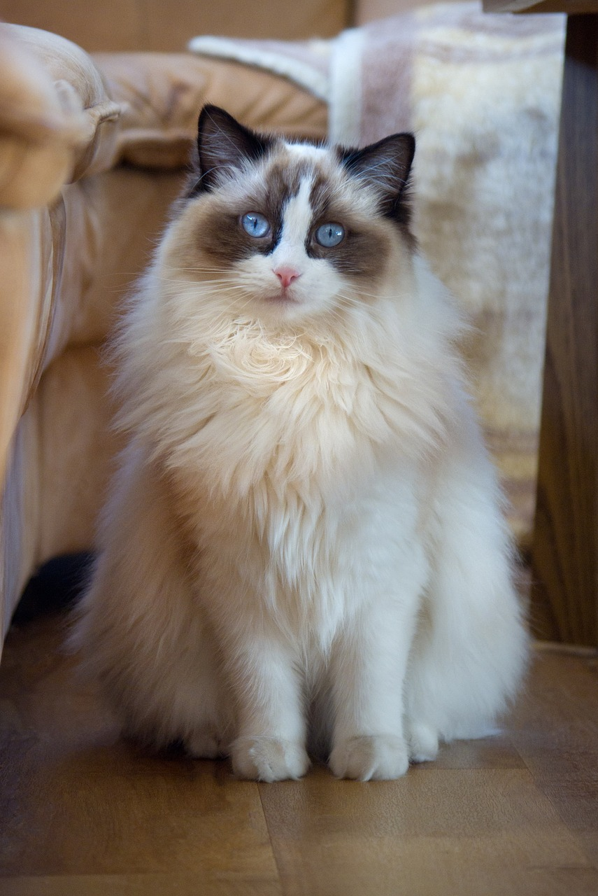

Contenido
El gato doméstico, llamado popularmente gato, y de forma coloquial minino, michino, michi, micho, mizo, miz, morroño o morrongo, entre otros nombres, es un mamífero carnívoro de la familia Felidae. Es una subespecie domesticada por la convivencia con el ser humano.
Este felino es un ser tranquilo, sedentario, pacífico y muy apegado a su dueño. Por su carácter vive muy cómodo en un piso y tolera bastante bien la soledad. Necesita cuidados específicos: cepillado diario porque su pelaje es largo y los nudos pueden crearse con bastante facilidad. Por otro lado, los ojos lagrimean frecuentemente, por lo que es necesario limpiarlos diariamente con productos específicos. Recordad que es posible que viviendo en piso la muda sea constante, por lo que no es un gato aconsejable para alérgicos.
El siamés es el más extrovertido de los felinos domésticos. No es nada tranquilo y sorprende a cada paso que da, es decir, es impredecible. Necesita mucha atención para sentirse bien, por lo que no lleva bien quedarse solo. Es un gato muy delgado, de orejas grandes y ojos azules. Por su pelo corto y suave, no necesita demasiados cepillados.
Un gato robusto de cola muy corta, un tercio o la mitad de lo común. En su forma de ser destaca por ser amistoso, muy inteligente y juguetón, aunque no llega a resultar demasiado activo. No reclaman mucha atención, pero siempre están dispuestos para unas caricias.
El Azul Ruso es uno de los gatos más admirados por su belleza, su cuerpo esbelto y el color de su pelaje llaman mucho la atención. Además, tiene muy buen carácter: alegre, juguetón y afectuoso. Su punto débil es que no aprecia demasiado a los extraños ni los ruidos y que no acepta la coacción. No necesita demasiados cuidados particulares, simplemente que le cepilles una o dos veces por semana, ya que tiene el pelo corto.
El Gato Somalí es felino ideal: equilibrado, activo pero lo justo, juguetón y de carácter afable con sus congéneres y extraños. si va a tener que para compartir hogar con otras mascotas. Reclama mucha atención pero no llega a ser posesivo. Se adapta a los cambios en la casa y en su entorno, pero mejor que viva en una con jardín. No tolera bien el frío. En cuanto al físico, su pelaje es semilargo que requiere de un cepillado diario.
Aunque este gato tiene pinta de rudo es un minino muy sociable y cariñoso. Una raza con una morfología adaptada a las duras inclemencias del tiempo. Tiene el pelo semilargo, tupido e impermeable y su mantenimiento es sencillo, ya que no se suele anudar.
Un gato tranquilote, a quien le gusta disfrutar de un ambiente relajado, aunque esconden un gran cazador en su interior. Su mayor y curiosa característica física es que no tiene cola. Cuenta con un pelaje largo que hay que cuidar y mantener higiénico.
Hay dos variedades bien diferenciadas, la inglesa y la americana, con un ancestro común, una gata tonkinesa. Es un minino muy vivaz, cercano, parlanchín, adora la compañía, no soporta la soledad, amigo de los niños… Con lo cuál, no es de extrañar que se le conozca como el “gato perruno”. Aunque cuentan con un pelaje largo y sedoso, no necesitan un cuidado continuo.
Se ha ganado su nombre a pulso, porque es un gran gato manejable y pausado. bonachón y dócil, es un buen compañero de piso. No es nada ruidoso, de hecho no soporta bien los sonidos fuertes. El mantenimiento de su pelaje requiere cepillado frecuente.
Este gran gato de aspecto salvaje es en realidad un ser muy apegado a sus humanos y con mucho gusto por el juego. Robusto y resistente, es capaz de soportar los más duros inviernos. Es considerada la raza de gatos más grande. Tienen un pelaje largo como el gato persa, aunque no necesita tantos cuidados con éste.